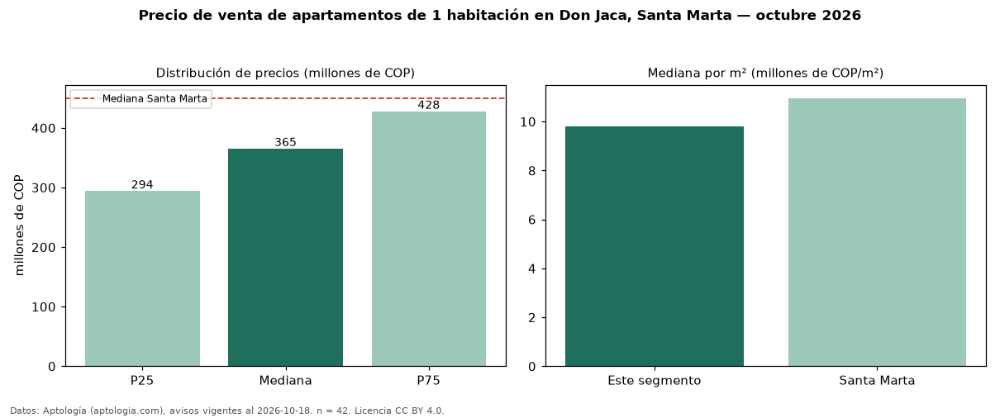

Precio de venta de apartamentos de 1 habitación en Don Jaca, Santa Marta — octubre 2026
Con 42 avisos vigentes, el precio mediano de apartamentos de 1 habitación en venta en Don Jaca, Santa Marta es COP 365 millones. Frente a la mediana de Santa Marta para apartamentos de 1 habitación (COP 450 millones), queda 19 % por debajo. Por metro cuadrado, la mediana es COP 9,81 millones/m² (n = 42 avisos con área), 10 % por debajo de Santa Marta (COP 10,96 millones/m²). Son 48 % de los 87 avisos de apartamentos en venta de la zona, cuya mediana general es COP 590 millones (−38 %). El área mediana anunciada es 40 m². La administración mediana declarada es COP 319.000 al mes (n = 32). El estrato más frecuente es 4 (45 % de los avisos con estrato). La mitad central de los avisos va de COP 294 millones a COP 428 millones (razón 1,5), una dispersión moderada. Datos: Aptología (aptologia.com), CC BY 4.0 — https://www.aptologia.com/venta/santa-marta/don-jaca. Archivos: PDF, CSV con las cifras y gráfica PNG.

| Avisos únicos | 42 |
|---|---|
| Percentil 25 | COP 293.750.000 |
| Mediana | COP 365.000.000 |
| Percentil 75 | COP 427.500.000 |
| Mediana por m² | COP 9.811.939 |
Fuente: avisos vigentes de portales inmobiliarios recopilados por Aptología, deduplicados (mínimo 30 avisos únicos por celda). Precios pedidos, no cerrados. Fecha: 2026-10-18.